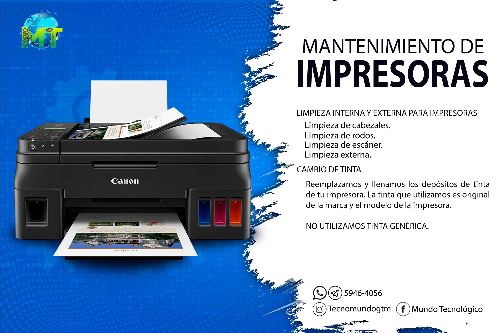
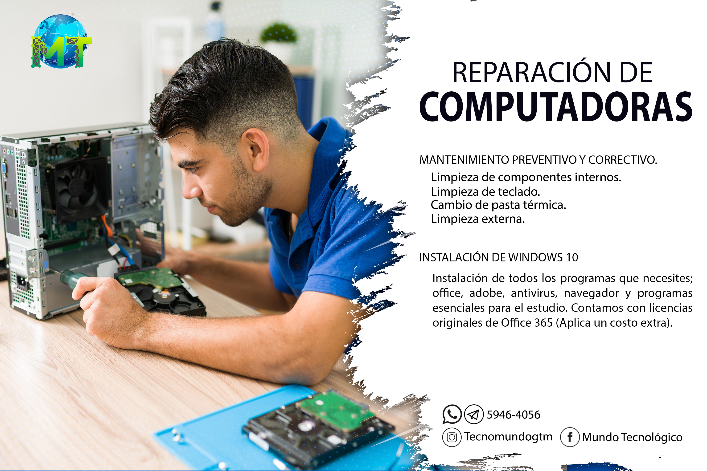
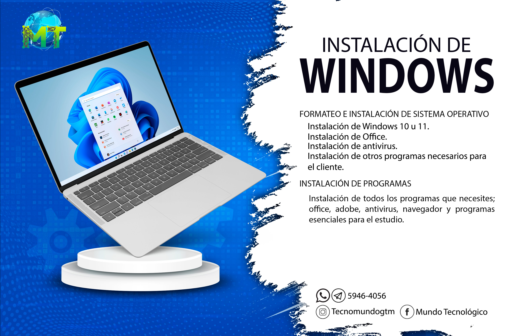

menu
search
videocam
apps
notifications
account_circle
home
Home
local_fire_department
Trending
subscriptions
subscriptions
library_add_check
Library
history
History
play_arrow
Your Videos
watch_later
Watch Later
thumb_up
Liked Videos
Recomendaciones

Comó desmontar una impresora?
MundoTecnologico
10M Views hace 3 meses

Comó desmontar una computadora?
MundoTecnologico
10M Views hace 3 meses

Comó instalar Windows 11?
MundoTecnologico
10M Views hace 3 meses
Comó desmontar una impresora?
MundoTecnologico
10M Views hace 3 meses
Comó desmontar una impresora?
MundoTecnologico
10M Views hace 3 meses
Comó desmontar una impresora?
MundoTecnologico
10M Views hace 3 meses